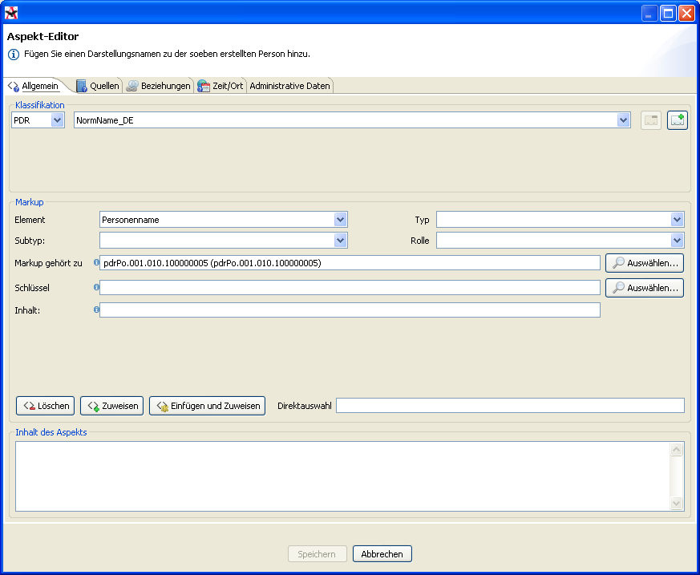
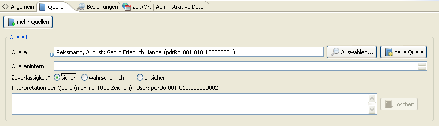

Prima di raccogliere dati dettagliati sulla persona di Handel in aspetti singoli, dobbiamo creare una nuova persona. Facciamo clic sull’icona della persona con la bacchetta magica nera, cioè la seconda icona nella barra in alto dello schermo.

Si apre l’editor aspetti, il quale vogliamo usare per aggiungere la prima informazione: il nome.

Prima dobbiamo selezionare la classificazione semantica dal nostro sistema di categorie dell’Archiv-Editor, che corrisponde alla nostra tavola excel. Selezioniamo il nome del nostro progetto dall’elenchino e selezionamo "‘Nome di norma"’, che significa che sarà il nome preferito per la visualizzazione di dati. Si possono aggiungere altre classificazioni facendo clic sul pulsante con il più verde, ma normalmente non ce n’è bisogno.

Poi entriamo il contenuto dell’aspetto nella casella vuota in fondo. Entriamo solo il nome, ma il nome completo: "‘Georg Friedrich Händel"’.

Ora aggiungiamo informazioni semantiche al il testo inserito. Tutte e due nomi e il cognome devono essere assegnato con il cosiddetto "‘markup"’. La procedura sarà sempre identica. Selezioniamo "‘Georg"’ con il mouse o con la tastiera. Vediamo quattro elenchi in media della finestra: "‘elemento"’, "‘tipo"’, "‘sottotipo"’ e "‘ruolo"’. Rappresentano un sistema di concetti in un’ordine gerarchica. Come funziona, vediamo quando selezioniamo "‘nome di persona"’ dall’elenco "‘elemento"’. Adesso l’elenco "‘tipo"’ è attualizzato e ci offre un numero di sottoconcetti. Selezioniamo "‘prenome"’, e poi "‘nome di nascita"’ dall’elenco "‘sottotipo"’. L’elenco "‘ruolo"’ ora non ci serve.

Facendo clic su "‘Assegna"’ vediamo che la parola "‘Handel"’ è stato evidenziata in rosso. Ora è dichiarato come un prenome di nascita.

Ripetiamo la procedura con il secondo prenome.

Dopo aver assegnato il markup per il prenome, facciamo lo stesso per il secondo prenome e per il cognome. Bisogna fare attenzione che attribuendo il cognome dobbiamo selezionare "‘cognome"’ nell’elenco di "‘tipo"’. Dopo aver attribuito tutto il markup, tutti i nomi sono evidenziati:

Ora dobbiamo assegnare la fonte dell’informazione. Cambiamo alla scheda "‘Fonti"’ e selezioniamo una delle fonti già usati. Possiamo anche aggiungere una fonte nuova. Dobbiamo anche assegnare la affidibilità. Normalmente basta selezionare "‘sicuro"’.

Ora possiamo salvare l’aspetto cliccando sul bottone "‘Salva"’ in fondo. La persona nuova è ora nel database e si troverà già nell’elenco al lato sinistro sotto la lettera "‘H"’. Cliccando sulla persona vedremo anche l’aspetto con il nome, che abbiamo creato.